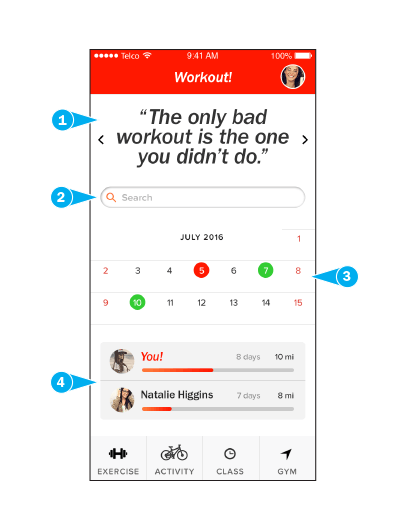
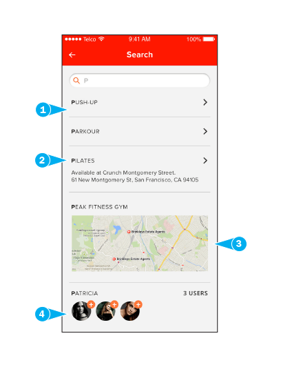

User Experience
Introduction
View my process end-to-end.
Workout!
Concept, Design
Workout! is an app motivating people to exercise, by providing a variety of activity and social options, while easily integrating into schedules!

Research
Interviews
What were the problems?
Fitness enthusiasts had difficulty scheduling time to work out, while also trying to be social. They also wanted variety in their activity, and choice of location.
"Once I get to the gym, there's no excuse."
"I go to the gym to work out, but sometimes I get bored... but I don't want to plateau."
"I work out before I get home, because I have mommy duties once I get there!"
"I'm always looking for a class that I might be able to take at a gym nearby."
Research
Persona

Tanya, 27, single
Highly-Social Urban Professional Seeking Workout / Life Balance
Behaviors:
- • Takes classes to be social, for consistency, to be accountable, or for competition
- • Shares details of workouts with friends via social media or messaging apps
Needs & Goals:
- • Motivation to get to gym or work out
- • Access to any class / gym at any location
- • Trying to balance time vs. location vs. fees
Typical Scenario:
"In general, I like my job, but there's nothing more that I love than hanging out with all my friends, whether it's at a restaurant or working out!"
On a Friday, after work, Tanya is still not sure whether she's going to a social event, or taking a yoga class with a friend. She checks her iPhone's Health app and sees that her activity has declined this week, due to working late. Before getting into her car, she wonders if the new boutique gym that opened on her route will have a drop-in policy for non-members.
Research
Competitor Analysis
Strategy
Prioritized Features
1.Motivational Elements
- • Motivation is the biggest factor to get enthusiasts to exercise
- • They also claim that once motivated, they will exercise
- • Content should be personalized, customizable, and predictive
2. Calendar Integration
- • To quickly and easily integrate exercise into schedules
- • To coordinate exercising with their contacts
3. Search Suggestions:
Variety / Randomization
- • Motivational content changes frequently
- • Exercise/activity content changes to counter fitness plateus
- • Provides options with or without decision-making
Strategy
User Flow
Design
Brief
Encouraging, energizing, and efficient.
Referencing the personas, prioritized features, and user flow, initial designs involved an all-in-one home screen, oversized 1-button confirmations, and results screens. Visual choices include warm reddish colors, a tall sans-serif, and a rounded sans-serif for typefaces. Lastly, the IA was made to be quickly accessible.
Colors:
- Primary Red: #FF1800
- Secondary Orange: #FF7A3B
Fonts:
- Primary: Franklin Gothic
- Secondary: Proxima Nova Soft
Design
Storyboarding Sketches
Gym Finder
Initially, an all-in-one search feature with suggestions was created, in the context of finding a gym quickly.
Also, large call-to-action buttons would help users interact with the app while on-the-go.
Activity and Results
Eventually, the all-in-one search page would become the Home screen. As a result of completing any activity, a points system was a possible feature to encourage exercising, competition, and app usage.
Design
Key Screens
Home
Stats
Consolidated user metrics would foster a feeling of competition
Confirmation / Invite
For the social user, inviting others should be easily accessible
Design
Navigation
Per card sorting, the home screen should always include a search bar, access to the main four activity options, a calendar, user-related options, and metrics & scoreboard.
Execution
Prototype Screens
Click to view on InVision
Testing
Results and Insight
The main user request was to feature a search bar more frequently or prominently across screens. Users also wanted to filter their results.
Otherwise, users liked the personalized search results and social capabilities, and felt the app was easy to use.
Workout!
Revised Hi-Fi Screens
Home
1. Motivational carousel rotates between quotes, imagery, and user stat highlights.
2. Search for anything.
3. Dates in green suggesting potential activity days based on history.
4. Mini-scoreboard/stats showing user-selected data.
Search
1. Exercises or Activity results shown first for actionability.
2. Class results show related gym or venue info.
3. Map results should also show nearby options.
4. Users in search can be invited to an activity.
In Conclusion
Business and Technical Considerations
Monetization
• Partner with developers to connect their apps/sites
• Partner with instructors and gyms to provide services
• Partner with visual artists and writers for content
Data Access and Storage
• Internet access and location services required
• Encrypted storage will hold user info, such as payments, logins, and memberships
• User activity data will need to synch across apps/devices
Hardware / Interactions
• Platform: Apple iOS app
• Adaptive website - similar to app
• Accelerometer used to track running/walking/stairs
• Camera and geo-tagging for photos/videos
• NFC for on-site payments
• Fingerprint access for quicker payments